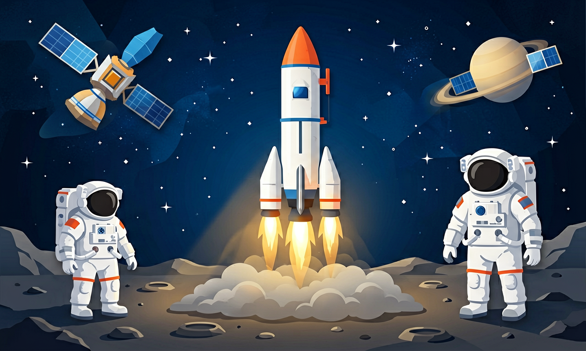
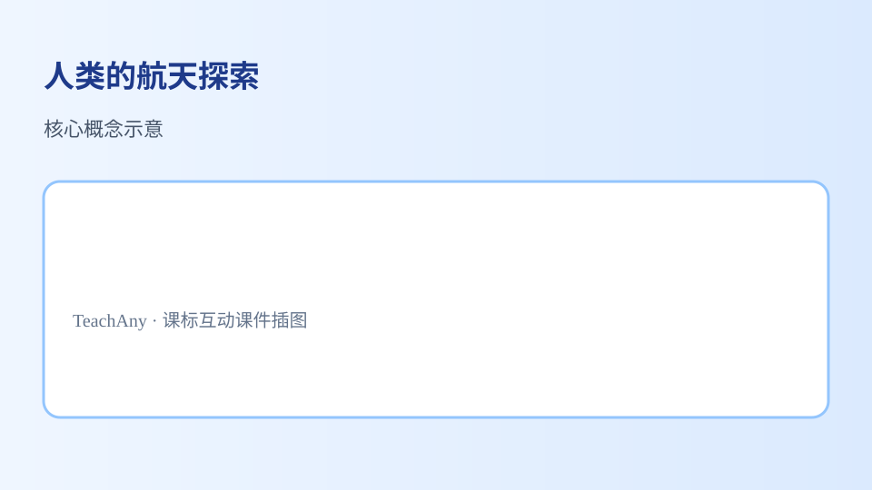
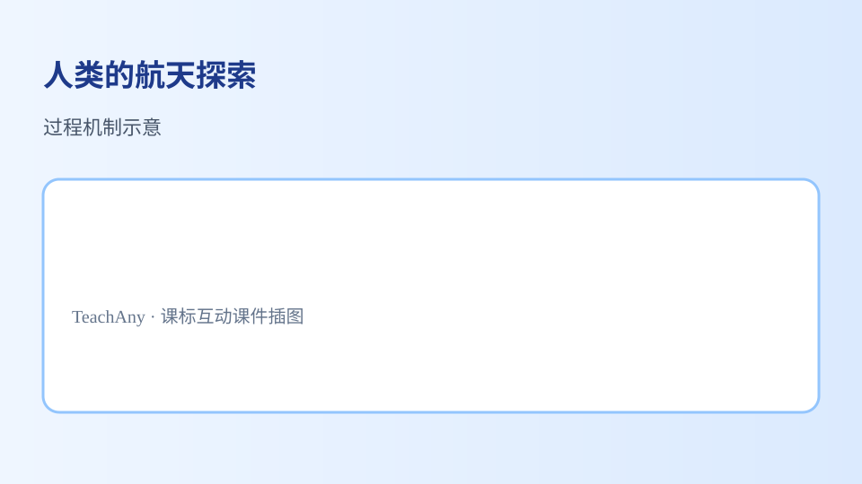

从人造卫星到载人飞船，从月球漫步到空间站生活——航天技术让人类走出地球家园。

选择或输入后，这节课会围绕你的问题展开。
气象卫星主要用于？
先选一个，错了正好暴露你的前概念，我们一起纠正。
20 世纪中叶以来，人类先后发射人造卫星、实现载人航天、登上月球、建造空间站，并开展火星等深空探测。每一次突破都依赖火箭推力、轨道控制和生命保障等关键技术。
航天探索拓宽了人类视野：我们得以从太空俯瞰地球，研究宇宙起源，发展通信、导航、遥感等技术，服务天气预报、灾害监测和科学研究。

通信卫星转发电视、电话信号；导航卫星（如北斗）帮助定位；遥感卫星拍摄地表，监测环境。载人飞船运送宇航员；空间站供长期在轨实验与生活；探测器飞往月球、火星采集数据。
火箭需克服地球引力，常采用多级火箭：前级燃料耗尽后脱落，减轻重量，让后级把载荷送入预定轨道。

把卡片拖到近地应用 / 载人航天 / 深空探测三类。
拖完 6 项后自动判分。
解释题：某次火箭发射将一颗遥感卫星送入轨道。请说明这颗卫星可能承担的两项任务，以及发射成功后对人们生活或科学研究的意义。
提示：遥感可监测农作物、洪涝、森林火灾等；要写出「观测什么→帮助什么」。
拓展题：为什么航天员在空间站需要特殊的生命保障系统？
关于人类航天探索，哪种说法最科学？
选一个并查看反馈。
迁移任务：查找一条近期航天新闻，判断它属于近地应用、载人航天还是深空探测，并写一句理由。